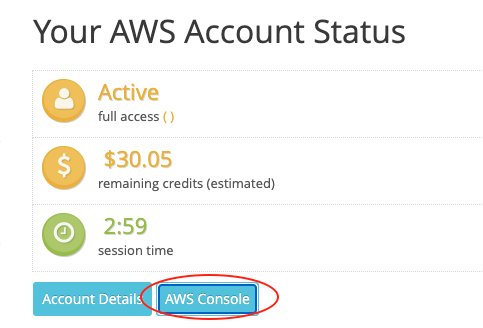
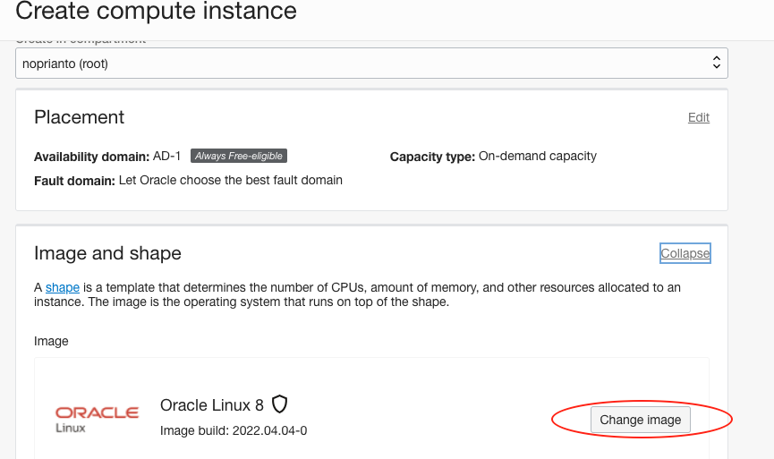
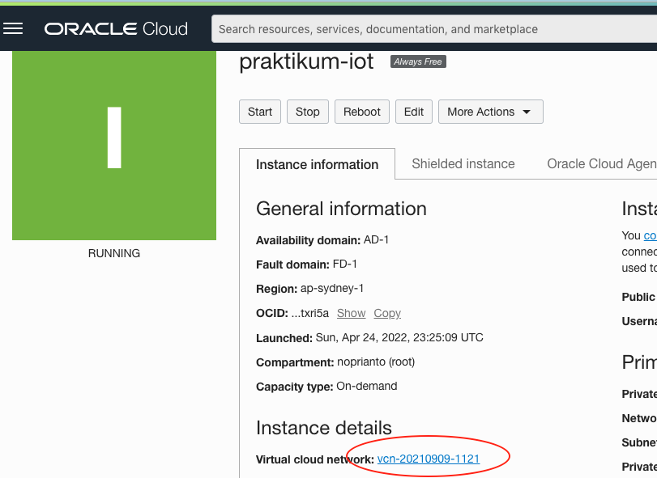
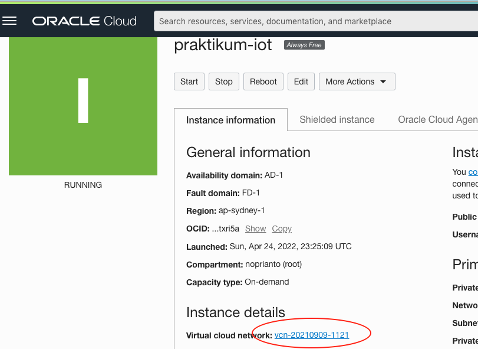
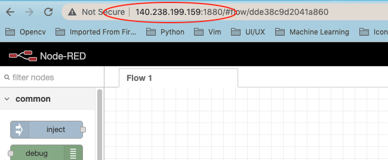
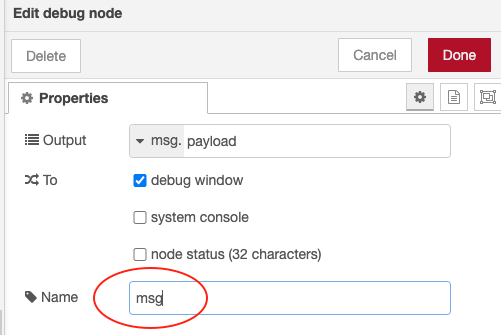
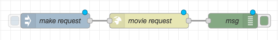
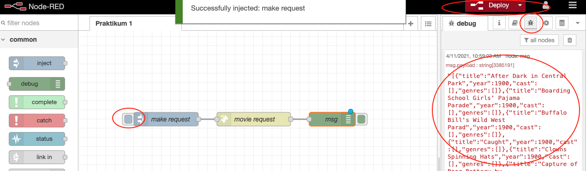
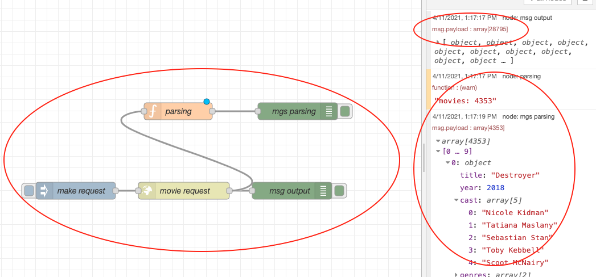

Installasi IoT Platform
Topik Bahasan
Installasi IoT Platform
Kemampuan Akhir yang Direncanakan
- Mahasiswa mampu melakukan instalasi dan konfigurasi IoT platform, baik secara lokal ataupun di cloud masing-masing.
- Mahasiswa mampu mengamankan atau menambahkan keamanan IoT platform
- Mahasiswa mampu menerapkan IoT platform untuk aplikasi sederhan.
Teori Singkat
IoT platform merupakan sebuah kumpulan alat bantu baik software ataupun hardware yang sangat mempermudah kita dalam membuat project IoT dalam hal mengumpulkan, memvisualisasikan, dan bahkan sampai dengan menganalisis data dari perangkat IoT kita. Dengan alat bantu tersebut kita bisa lebih fokus terhadap proses bisnis, sehingga proses development akan sangat jauh lebih mudah dan cepat.
Hampir semua raksasa internet ataupun layanan cloud menyediakan IoT Platform, misalkan AWS dengan Amazon AWS IoT Core, Google dengan Google Cloud IoT Core, IBM dengan IBM Watson IoT, Microsoft dengan Microsoft Azure IoT Suite, Blynk IoT Platform, Node-red, dan masih banyak yang lain. Dari beberapa yang telah disebutkan ada yang bersifat free ataupun berbayar, disesuaikan dengan kebutuhan project kita.
Pada praktikum yang akan kita lakukan adalah menggunakan node-red sebagai IoT Platform. Node-red adalah sebuah alat bantu programming sekaligus dalam proses wiring pada perangkat hardware, API, dan layanan online dengan cara yang menarik.

https://nodered.org/about/resources/
Praktikum
1. Install Node-Red AWS
Node-red menyediakan sebuah editor berbasis browser sehingga mudah untuk dioperasikan pada waktu merangkai sebuah flow dari sebuah node pada pallete dan dapat di-deploy hanya dengan sekali klik. Node-red dibangun pada sebuah Node.js yang terkenal dengan ringan untuk dijalankan, konsep event-driven, dan menggunakan model non-blocking. Node-red dapat diinstall dalam sebuah jaringan dengan spesifikasi hardware yang murah seperti raspberry maupun di cloud. Pada praktikum kali ini akan diinstall pada sebuah layanan cloud yaitu AWS.
Misalnya belum mendaftar sebagai AWS Educate bisa diganti dengan install di Raspberry Pi atau di komputer local. Tentunya ketika install di local dengan sistem operasi windows sangat berbeda dengan langkah yang disajikan pada jobsheet ini, Untuk lebih jelasnya bisa melihat dokumentasinya di https://nodered.org/docs/getting-started/
Berikut ini adalah langkah-langkahnya
Silakan login ke akun aws educate, https://www.awseducate.com/educator/s/. Jika berhasil akan diarahkan ke halaman AWS educate seperti pada gambar di bawah ini

Pilih menu
AWS Account - AWS Educate Started Account, selanjutnya muncul halaman seperti ditunjukkan pada gambar berikut
Pilih
AWS Consoledan muncul halamanAWS Management Consoleseperti berikut ini
Kemudian silakan pilih
EC2, untuk membuat sebuah instance langkahnya seperti pada praktikum tentang socket client. Silakan cek kembali pada pertemuan sebelumnya.Jangan lupa pada langkah
Configure Security Group, buatlah sebuah rule untuk protokolCustom TCP Ruledengan menambahkan port 1880. Port tersebut digunakan untuk mengakses node-red yang akan kita install pada EC2.Silakan login ke instance yang telah Anda buat, setelah login ketika perintah seperti di bawah ini
ubuntu@ip-172-31-21-64:~$ node --version Command 'node' not found, but can be installed with: sudo apt install nodejs ubuntu@ip-172-31-21-64:~$ npm --version Command 'npm' not found, but can be installed with: sudo apt install npmDari keluaran perintah di atas terlihat bahwa nodejs dan npm belum terinstall, agar node-red bisa berjalan dibutuhkan nodejs. Kemudian npm adalah paket manajement atau library manajemen nodejs yang kelak akan kita gunakan ketika ingin install library tertentu.
Jalankan perintah seperti di bawah ini untuk install keduanya.
ubuntu@ip-172-31-21-64:~$ sudo apt-get update Hit:1 http://us-east-1.ec2.archive.ubuntu.com/ubuntu focal InRelease Get:2 http://us-east-1.ec2.archive.ubuntu.com/ubuntu focal-updates InRelease [114 kB] Get:3 http://us-east-1.ec2.archive.ubuntu.com/ubuntu focal-backports InRelease [101 kB] Get:4 http://security.ubuntu.com/ubuntu focal-security InRelease [109 kB] ... ubuntu@ip-172-31-21-64:~$ sudo apt-get install -y nodejs build-essential ubuntu@ip-172-31-21-64:~$ sudo apt-get install -y npm ubuntu@ip-172-31-21-64:~$ sudo npm install -g --unsafe-perm node-redSetelah langkah di atas selesai, kemudian jalankan node-red dengan mengetik perintah
node-redpada terminal atau putty. Untuk lebih jelasnya dapat dilihat pada ilustrasi di bawah iniubuntu@ip-172-31-21-64:~$ node-red 10 Apr 14:14:18 - [info] Welcome to Node-RED =================== 10 Apr 14:14:18 - [info] Node-RED version: v1.3.1 10 Apr 14:14:18 - [info] Node.js version: v10.19.0 10 Apr 14:14:18 - [info] Linux 5.4.0-1038-aws x64 LE 10 Apr 14:14:18 - [info] Loading palette nodes 10 Apr 14:14:19 - [info] Settings file : /home/ubuntu/.node-red/settings.js 10 Apr 14:14:19 - [info] Context store : 'default' [module=memory] 10 Apr 14:14:19 - [info] User directory : /home/ubuntu/.node-red 10 Apr 14:14:19 - [warn] Projects disabled : editorTheme.projects.enabled=false 10 Apr 14:14:19 - [info] Flows file : /home/ubuntu/.node-red/flows_ip-172-31-21-64.json 10 Apr 14:14:19 - [info] Creating new flow file ...Silakan akses alamat
http://[domain atau ip instance Anda]:1880/, jika berhasil akan muncul tampilan node-red yang ditunjukkan pada gambar di bawah ini. Misalkan akses kehttp://ec2-3-90-163-77.compute-1.amazonaws.com:1880/
Ketika instance dimatikan atau direstart maka Node-Red harus dinyalan kembali, berikut ini adalah perintah yang digunakan agar Node-Red tetap berjalan ketika instance restart.
sudo npm install -g --unsafe-perm pm2
pm2 start `which node-red` -- -v
pm2 save
pm2 startup
sudo env PATH=$PATH:/usr/bin /usr/local/lib/node_modules/pm2/bin/pm2 startup systemd -u ubuntu --hp /home/ubuntu
Silakan restart instance Anda, seharusnya Node-Red sudah berjalan dan tidak perlu menjalankan kembali. pm2 adalah
modul manajemen aplikasi yang berjalan pada nodejs.
2. Install Node-RED Oracle Cloud
Ketika Anda menggunakan layanan cloud orcle, langkahnya mirip dengan ketika Anda menggunakan AWS dan sebenarnya topik ini sudah pernah Anda dapatkan ketika mengambil mata kuliah komputasi awan. Secara sederhana dapat mengikuti langkah-langkah seperti berikut ini
- Silakan login menggunakan akun oracle cloud Anda, kemudian masuk atau pilih menu
Compute - Instanceseperti ditunjukkan pada gambar di bawah ini
- Anda akan akan diarahkan ke daftar instance yang sebelumnya telah dibuat, silakan buat instance baru. Untuk akun
oracle yang free dibatasi hanya beberapa instance saja, sebaiknya Anda terminate instance yang tidak digunakan. Ikuti
langkah di bawah ini untuk membuat instance

- Setelah klik tombol
Create instance, akan muncul halaman properties terkait dengan instance yang akan Anda buat misalkan jenis sistem operasi yang digunakan apa, spesifikasi yang digunakan, atau juga terkait dengan model boot ketika instance dijalankan. Khusus bagian sistem operasi, silakan memilih ubuntu seperti ditunjukkan pada gambar di bawah ini  Dengan cara klik tombolChange Imagesehingga bisa memilih beberapa pilihan seperti pada gambar barikut Jika sudah, agar bisa mengakses instance Anda download private key seperti pada tampilan di bawah ini
Jika sudah, agar bisa mengakses instance Anda download private key seperti pada tampilan di bawah ini
 Terakhir klik Create Instance, sampai muncul tampilan yang menandakan bahwa isntance sedang berjalan seperti pada
gambar berikut

Terakhir klik Create Instance, sampai muncul tampilan yang menandakan bahwa isntance sedang berjalan seperti pada
gambar berikut

Port default yang digunakan adalah 1880, di Oracle Cloud kita tidak bisa langsung open port sehingga membutuhkan beberapa langkah untuk melakukan hal tersebut
Silakan pilih menu
Networking - Virtual Cloud Networksseperti ditunjukkan pada gambar berikut
- Selanjutnya pilih VCN yang digunakan sampai muncul halaman
Default Security List, bisa dengan klik tombolAdd Ingress Ruleseperti pada contoh gambar di bawah ini
- Masukkan beberapa informasi seperti ip address mana yang bisa mengakses dan yang paling penting adalah port yang akan
dibuka agar bisa diakses dari luar. Silakan perhatikan contoh di bawah ini

- Silakan masuk ke instance Anda menggunakan protokol ssh, bisa menggunakan putty atau tool sejenisnya. Pada langkah
ini membutuhkan private key yang seblumnya telah di-download, khusus untuk pengguna sistem operasi linux atau Mac OS
perlu mengubah mode file terlebih dahlulu seperti ditunjukkan pada gambar berikut

- Silakan ikuti langkah-langkah seperti pada installasi menggunakan AWS mulai pada langkah no.5. Jika sudah selesai silakan buka browser Anda dan masukkan alamat instance Anda diikuti dengan port 1880. Seharusnya akan menampilkan halaman Node-RED seperti pada contoh gambar di bawah ini 
Jangan lupa agar konfigurasi open port pada Virtual Cloud Networks memberikan efek, Anda juga harus menjalankan 2
baris perintah seperti ini
sudo iptables -I INPUT 6 -m state --state NEW -p tcp --dport 1880 -j ACCEPT
sudo netfilter-persistent save
Node-RED bisa juga dilakukan installasi pada mesin lokal atau localhost, caranya sama seperti langkah-langkah di atas. Yang paling penting adalah harus sudah terinstall
nodejs dan npm.
3. Installasi menggunakan docker
Ketika menggunakan docker Anda cukup mengunduh image node-red, yang paling penting docker desktop sudah terinstall terlebih dahulu di laptop/pc atau server Anda. Jika sudah terinstall docker desktop silakan ketik perintah di bawah ini atau Anda bisa mengecek icon desktop docker di pojok kanan bawah jika menggunakan windows.
╰─ docker --version 90%
Docker version 20.10.21, build baeda1f
Jika sudah muncul seperti di atas, dilanjutkan dengan ketika perintah di bawah ini
docker run -it -p 1880:1880 -v myNodeREDdata:/data --name mynodered nodered/node-red
Keterangan dari perintah di atas adalah
-itmerupakan parameter yang artinya iteraktif pada image node-red ketika dijalankan.-p 1880:1880artinya adalah mapping port 1880 dari container node-red ke port 1880 mesin local atau host.-v myNodeREDdata:/databerarti membuat volume dengan namamyNodeREDdata:/dataagar ketika container dihapus data tidak terhapus.--name mynoderedadalah nama container yang kita buat.nodered/node-redadalah nama image yang kita jalankan.
Anda bisa mengecek apakah node-red sudah berjalan dengan buka browser - ketik http://localhost:1880/
3. Menambahkan Keamanan pada Node-Red
Ketika sudah berhasil install Node-RED, kita langsung bisa mengakses halaman editor yang mana terdapat semua flow atau alur dari project yang telah kita buat. Hal ini tentunya tidak akan dilakukan ketika project yang telah di-deploy, sehingga dibutuhkan mekanisme untuk membatasi setiap user ketika akan mengakses Node-RED.
Untuk mengamankan sebagai contoh memberikan user password ataupun mengganti protocol https pada halaman Node-RED, berikut ini cara yang dilakukan untuk menambahkan user dan password pada Node-RED yang telah kita install.
Silakan edit file settings.js, file tersebut merupakan file konfigurasi Node-RED. Biasanya terletak pada home
direktori installasi Node-RED. File tersebut terletak di .node-red/settings.js
ubuntu@ip-172-31-21-64:~$ pwd
/home/ubuntu
ubuntu@ip-172-31-21-64:~$ ls -al
total 36
drwxr-xr-x 6 ubuntu ubuntu 4096 Apr 10 14:38 .
drwxr-xr-x 3 root root 4096 Apr 10 14:00 ..
-rw-r--r-- 1 ubuntu ubuntu 220 Feb 25 2020 .bash_logout
-rw-r--r-- 1 ubuntu ubuntu 3771 Feb 25 2020 .bashrc
drwx------ 2 ubuntu ubuntu 4096 Apr 10 14:01 .cache
drwxrwxr-x 3 ubuntu ubuntu 4096 Apr 10 14:38 .local
drwxrwxr-x 4 ubuntu ubuntu 4096 Apr 10 14:45 .node-red
-rw-r--r-- 1 ubuntu ubuntu 807 Feb 25 2020 .profile
drwx------ 2 ubuntu ubuntu 4096 Apr 10 14:00 .ssh
-rw-r--r-- 1 ubuntu ubuntu 0 Apr 10 14:08 .sudo_as_admin_successful
ubuntu@ip-172-31-21-64:~$ ls -al .node-red/settings.js
-rw-r--r-- 1 ubuntu ubuntu 15473 Apr 10 14:41 .node-red/settings.js
Buka file settings.js menggunakan editor misalkan menggunakan nano dengan perintah nano .node-red/settings.js
atau langsung bisa menggunakan SFTP kemudian buka comment baris berikut ini, setelah dibuka seperti berikut
// Securing Node-RED
// -----------------
// To password protect the Node-RED editor and admin API, the following
// property can be used. See http://nodered.org/docs/security.html for details.
adminAuth: {
type: "credentials",
users: [{
username: "admin",
password: "$2b$08$WcJwycUos6FqbUKZsIfGzOqHC4kJQ0GHY7Oz.mR7zaasPtBHuk2gm",
permissions: "*"
},{
username: "odeng",
password: "$2a$08$5LFz5nVwzCyX/r6rHb4KpuvG16pUwPYHTA/OxBqwTqdNB9a6K/rru",
permissions: "read"
}]
},
Isikan username, password, dan permisi dari setiap user. Hanya terdapat 2 rule yang dapat digunakan yaitu full akses dan read. Yang membedakan 2 rule tersebut adalah read tidak bisa digunakan untuk menambahkan library atau pallete ataupun mengkonfigurasi node-read. Untuk membuat password silakan menggunakan perintah bawaan dari node-red seperti berikut
ubuntu@ip-172-31-21-64:~$ node-red admin hash-pw
Password:
Isikan password di atas sesuai dengan keinginan, password tersebut menggunakan algoritma bcrypt sehingga tidak bisa dilakukan decrypt. Cara lain yang dapat digunakan membuat password menggunakan perintah
ubuntu@ip-172-31-21-64:~$ node -e "console.log(require('bcryptjs').hashSync(process.argv[1], 8));" 1234
$2a$08$sFcvlvl..OIIku1mzjtmFuoHSs7sOpeZS6bwdWaPpS640.JnxNoX.
Isikan your-password-here sesuai dengan password Anda.
Ketika terjadi error karena library bcryptjs belum diinstall, silakan diinstall menggunakan perintah
npm install bcryptjs --saveJika Anda menggunakan windows, silakan mencari file
setting.jspada direktori installasi node-red, untuk langkah-langkah selanjutnya sama.Silakan masuk ke Node-RED, seharusnya akan meminta user dan password seperti gambar berikut ini

Pertanyaan
- Gantilah port bawaan Node-RED dan buktikan bahwa Node-RED bisa diakses dari public network?
- Buktikan dengan tangkapan layar perbedaan antar permisi untuk user read dan full access?
3 . Sample Node-Red
Pada praktikum yang ini ditunjukkan menggunakan Node-RED untuk request sebuah end point dan menampilkan response dalam sebuah mode debug. Silakan mengikuti langkah-langkah di bawah ini
Drag sebuah pallete node
injectpada kategorinetworkke worksheet, perhatikan gambar berikut ini
Selanjutnya double klik node
injectyang terdapat pada worksheet sehingga menampilkan jendela properties seperti berikut
Ubah name menjadi
make requestdan hapus propertimsg.payloadsertamsg.topicmenggunakan iconcross, jika sudah jangan lupa klik tombolDone.Tambahkan juga node
http requestpada worksheet, sesuaikan properties pada nilaiURL dan name. IsikanURLdenganhttps://raw.githubusercontent.com/prust/wikipedia-movie-data/master/movies.jsondan sedangkannamediisi denganmovie request. Untuk lebih jelasnya dapat dilihat pada gambar berikut ini
Hubungkan node
make reqeust (inject)danmovie request (http request)dengan cara klik dan drag antar ujung node, hasilnya dapat dilihat pada gambar berikut ini
Tambahkan node
debugyang terdapat pada kategoricommon, jangan lupa diubah name dengan nama msg. Terakhir hubungkan node tersebut dengan nodemovie request. Hasil akhirnya adalah sebagai berikut

Langkah terakhir, silakan klik tombol
Deployyang terletak di pojok kanan atas sampai muncul popupsuccessfully deployed. Jika sudah, klikmake requestdan amati hasilnya pada bagiandebug(klik icon kutu) di jendela sebelah kanan. Untuk lebih jelasnya dapat dilihat pada gambar di bawah ini
Pertanyaaan
Tambahkan kembali
node functiondannode debug, yang masing-masing fungsinya adalah untuk memfilter dimana movie yang akan tampil hanya movie dengan tahun > 2000 dan untuk menampilkan data filter tersebut.Flow dan output pada debug dapat dilihat seperti berikut ini 
Video Pendukung
Tugas
Buatlah sebuah flow yang digunakan untuk menentukan sebuah kondisi temperatur dingin, normal, dan panas. Terdapat 3 node inject masing-masing sebagai berikut;
- Ketika inject pertama diklik akan muncul di panel debug menampilkan dingin, lewatkan nilai 5 pada node inject pertama.
- Ketika inject kedua diklik akan muncul di panel debug menampilkan normal, lewatkan nilai 25 pada node inject kedua.
- Ketika inject ketiga diklik akan muncul di panel debug menampilkan panas, lewatkan nilai 50 pada node inject ketiga.
Perhatian keluaran pada panel debug di bawah ini, itu output yang diharapkan.